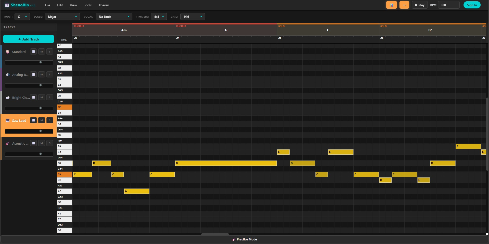
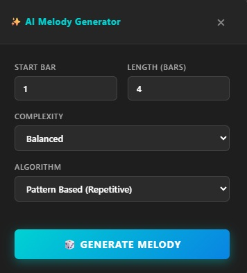
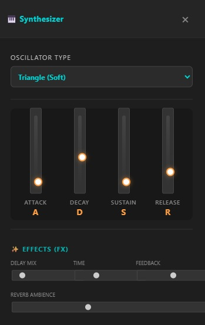
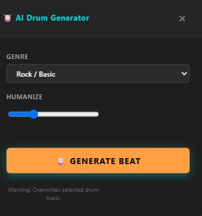
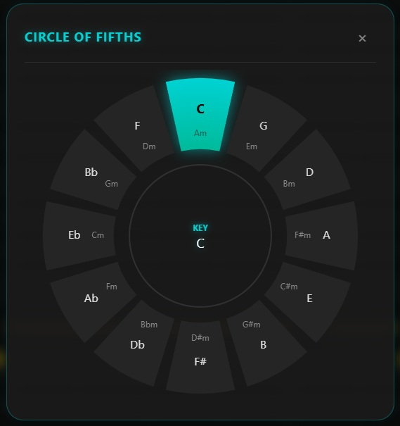
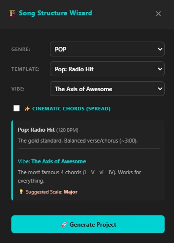
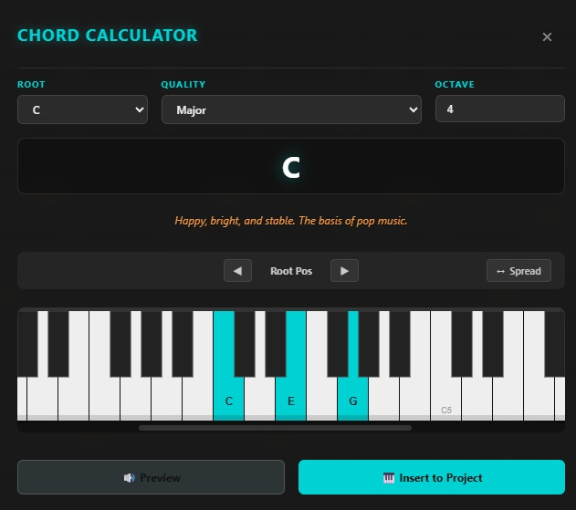
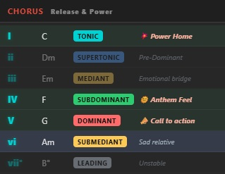
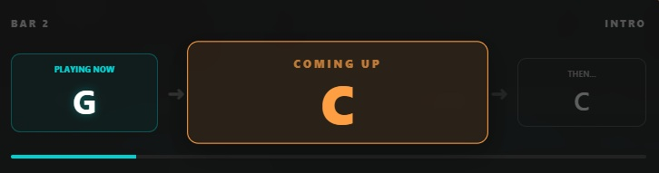
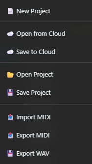

A dual-purpose web application designed for both music education and creative production. Build melodies, analyze chords, and generate beats instantly in your browser.

Main DAW Interface [main.jpg]Everything you need to sketch, learn, and produce music.

Melody GeneratorUses Markov Chains to learn your musical style. Draw a few notes, and the AI generates statistically matching continuations.

Synthesizer UIShape your sound with integrated ADSR envelopes, multiple oscillator types (Sine, Saw, Square), and built-in Delay/Reverb FX.

Drum AIGenerate complex rhythms instantly. Select a genre (Rock, Trap, Techno) and let the engine build the perfect beat with humanization.

Circle of FifthsVisualize diatonic relationships with the interactive Circle of Fifths. Click a key and watch the piano roll adapt instantly.

Structure WizardMap out entire tracks with the Structure Wizard. Define genre, templates, and vibes to generate full cinematic arrangements.

Chord Calc
RecommenderA real-time harmony spell-checker. Calculate complex chords, invert them, and use the Recommender to find the next perfect progression.
A "Heads-Up Display" showing the current playing chord and what's coming up next, perfect for instrumentalists playing along.
Save your projects locally as JSON or push them directly to the cloud to access your ideas from anywhere.
Don't let ideas stay in the browser. Export standard MIDI files for Ableton/FL Studio, or render high-quality WAV audio.

Practice HUD
Export MenuShenoBin is built for the community. Explore the code, contribute your ideas, report issues, or give us a star on GitHub!